鍼灸、整骨、接骨、美容鍼灸、マッサージ、整体、カイロプラクティック、O脚矯正、不妊、エステでお困りの方はTeaching Beauty鍼灸マッサージ整骨院へ。
電話でのご予約・お問い合わせはTEL.03-6413-7803
〒154-0014 東京都世田谷区新町3-21-1さくらウェルガーデン301
メディア紹介
２０１５．1.7 NHK ”ひるとく” 生放送『１分で首の痛みが取れる方法』
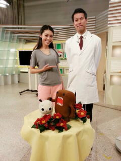
2015年1月７日(七草の日) 第1段11：40〜12：00 放送
・お正月で疲れた胃腸を休めるツボ
・お正月で寝違えて首が動かない首を１分で動かす方法
NHKひるとく生放送初出演！！
TeachingBeauty鍼灸マッサージ鍼灸整骨院、TeachingBeautyエステサロンは各メディアに取り上げられています。
全国のゴットハンドとして当院の院長をご紹介いただきました。
２０１５．4.22 NHK ”ひるとく” 生放送 『姿勢で人生が変わる』
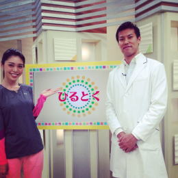
2015年4月22日 第２段11：40〜12：00 放送
姿勢で人生が変わる
オリジナルのくびれ体操法を紹介しました。
出演後、好評のため当院の院長のレギュラー化が決定！
姿勢が美しいだけで、自信がある、仕事ができそう。
など、外見的な評価が上がるため生涯年収で1,780万円も
違いがあるそうです。
姿勢を整えると腰痛、肩こりは治ります。
マッサージ屋さんや整体院に通っていても、また時間が経つと痛みがでるのは姿勢が直ってないからなのです。
また、姿勢が良いと内蔵の機能を調整するため、１００歳まで痛みのない生活がおくれると言われております。
２０１５．6.24 NHK ”ひるとく” 『精神疾患に効くツボと運動法』
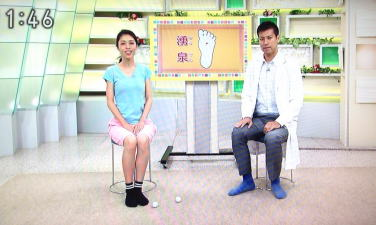
2015年6月24日 第３段11：40〜12：00 放送
精神疾患に効くツボと運動法を紹介
5月病は気の流れがうまく流れないために発症すると言われております。
そのため、元気がない人、うつ病になりやすい人は全身の気がうまく回っていません。
今回はツボ押しと、元気がもりもり湧いてくる元気もりもり体操をご紹介。
２０１５．7.22 NHK ”ひるとく” 生放送 『ぽっこりお腹を撃退法』
2015年7月22日 第４段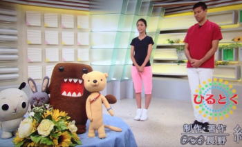
11：40〜12：00 放送夏までに、２週間でぽっこりお腹を改善する方法!!
人間はじっと寝ていてもエネルギーを必要とします。それを基礎代謝といいます。
この基礎代謝を高くすることにより沢山食べても太りにくい体になります。
そのため、基礎代謝を上げるツボと体操法を
ご紹介。
２０１４．7月発売 セレチケ
セレチケ2014年7月号
Teaching Beauty鍼灸マッサージ整骨院を紹介して頂きました。
２０１４．11月発売 セレチケ
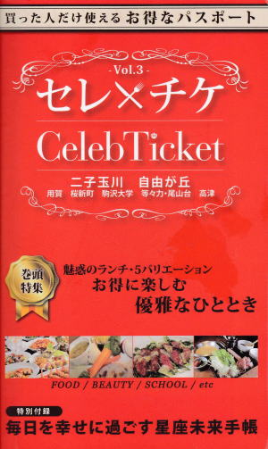
セレチケ2014年11月号
Teaching Beauty鍼灸マッサージ整骨院を紹介して頂きました。
2015．10.14 NHK”ひるとく”生放送『急なぎっくり腰の対処方法 』
2015年10月14日 第５段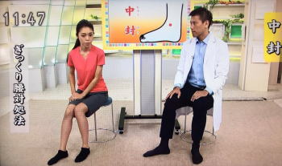
11：40〜12：00 放送ぎっくり腰の対処の方法をご紹介。
ぎっくり腰は急になってしまってどうしたらよいかわからない。
当院では全く動けなかった人もすぐに痛みが消えてしまいます。
治療時間わずか１分で痛みがなくなってしまう方もしばしばいます。
２０１５．12.9 NHK ”ひるとく” 生放送 『風邪の引き初め対処法』
2015年12月9日 第6段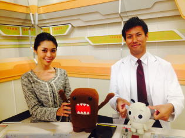
11:40〜12：00 放送風邪には実は鍼灸とツボ押しがオススメ。
風邪薬を飲んだり内科に行って薬を飲むよりも鍼灸が効く。
風邪に効く薬を発見したらノーベル賞ものであると言われております。
また、お医者さんの9割は自分が風邪を引いた時に風邪薬を飲みません。
当院には風邪やインフルエンザで来院されている方も多くいます。
その理由をNHKにて放送します。
2015．12.25 NHK ”ひるとくXmasスペシャル” 生出演
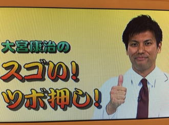
2015年12月25日 第7段19：00〜20：30 放送
ひるとくXmasスペシャルにて、
HEROで有名な”あるよ”の田中要次さんと共演させて頂きました。
私もいいツボあるよと”あるよ”を使わせてもらいました。
風邪の対処法、体を温めるツボ、よく眠れるツボをご紹介します。
ひるとく、初のゴールデンタイムに出演いたします。
2016．2.3 NHK ”ひるとく” 生放送『花粉症を自分で治す方法 』
2016年2月3日 第8段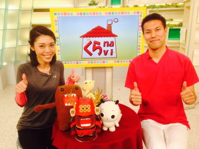
11:40〜12：00 放送本年度からNHKでは大河ドラマ
『真田丸』が始まります。
真田の甲冑を付けたど〜もくんと撮影！
花粉症はアレルギー反応のため西洋医学で治す方法はありません。
詳しく知りたい方はこちら↓↓↓
2016．4.6 NHK ”ひるとく、ｲﾌﾞﾆﾝｸﾞ信州” 収録 『免疫力アップ法 』
2016年4月6日 第9段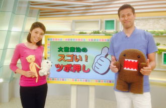
ひるとく 11：40〜12：00イブニング信州 18：10〜19：00
今回から全国初！！
当院の院長の名前入りコーナー化決定！
『大宮康治のスゴい！ツボ押し』
また、今回からはひるとく以外でもイブニング信州のニュースの時間にも放送されます。
免疫をアップさせると色々な病気に罹りにくくなります。
日本人の死因１位のガンも免疫をアップさせておけばガンに罹りにくくなります。
免疫をアップさせることは『健康長生き』には欠かせません。
２０１6．5.2 NHK ”ひるとく” 『不眠症、不眠障害に効くツボ』
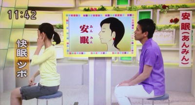
2016年5月2日 第10段
ひるとく 11：40〜12：00
ｲﾌﾞﾆﾝｸﾞ信州 18：10〜19：00
この時期は五月病で有名なとおり精神疾患の患者様が多くなります。
精神疾患をお持ちの患者様ののほとんどが睡眠障害を訴えます。
そのため、本日は睡眠障害に効くツボを紹介してきました。
1、安眠
このツボ眠はその名前の通り快眠、熟睡するのに効果的なツボです。
特に、「熟睡できるツボ」なので寝てもなかなか疲れが取れない人におすすめです。
また、睡眠不足や眠りが浅い人の場合、この場所を押して痛みやコリを感じます。
例え自覚症状がないとしても睡眠不足の可能性が高いので注意が必要です。
そのため、自分が睡眠が足りているかのセルフチャックにもなります。
位置は耳のすぐ後ろの尖った骨から指1本分下。
ここを押して痛い方は自覚症状がなくても良い睡眠がとれていない可能性があります。
また、このツボは温めてから行うと更に効果的なために入浴後に行うと良いでしょう。
2、失眠
足の踵の真ん中にあるツボ。「失眠」。
「眠りを失った時に効果的なツボ」と書く事から失眠は中国では不眠と同じ意味で使われています。 高ぶった神経をリラックスさせる働きがあるため、夜に目がさえてなかなか寝つけない時に大変有効なツボになります。 また、リラックス効果があるため精神的疾患にも有効なツボになります。 寝つきが悪い時にオススメ。
それ以外にもご自身で注意すること。
1、ぬるめで半身浴をする
2、寝る1時間前には液晶画面をみない
3、朝の10時までに朝日にあたる
4、ホットミルクを飲む
睡眠障害で悩まれている方は是非、ツボを押してみて下さい！
さらにこちらをどうぞ。

TeachingBeauty鍼灸整骨院
〒154-0014
東京都世田谷区新町3-21-1
さくらウェルガーデン3F
TEL：
03-6413-7803
→アクセス
診療時間
【通常診療】
月火金土
午前：09:00〜13:00
午後：15:00〜19:00
木曜日
午前：休診
午後：15:00〜19:00
※当日予約可
休診日
水、木(午前)、日、祭日
夜間診療
月火木金土／19:00〜21:00
※通常価格の1.5倍料金
※当日の19時までにご予約の場合のみ
※往診の場合も19時までにご予約下さい
早朝診療
月火木金土／07:00〜09:00
※通常価格の2倍料金
※前日の19時までにご予約の場合のみ
交通事故・労災・
各種保険取扱い